M S DHONI
Mahendra Singh Dhoni, commonly known as MS Dhoni, is a former Indian cricketer and one of the most iconic figures in the history of cricket. He was born on July 7, 1981, in Ranchi, Jharkhand, India. Dhoni is renowned for his exceptional leadership skills, cool demeanor under pressure, and his contributions as a wicketkeeper-batsman.
Mahendra Singh Dhoni is one of the most popular cricketers in the world, and fans have given him many nicknames. Some of the most common nicknames for Dhoni include: Mahi, MS, MSD, Captain Cool, Thala, Finisher
Dhoni is a true legend of Indian cricket, gem of a human being. He is kind, compassionate, always puts team before himself, and his fans have given him many nicknames to reflect his greatness.
Dhoni's most notable achievements:
- 2007 ICC Men's T20 World Cup: Dhoni led India to victory in the inaugural ICC Men's T20 World Cup, defeating Pakistan in the final.
- Cricket World Cup: Dhoni led India to victory in the 2011 Cricket World Cup, defeating Sri Lanka in the final. This was India's first Cricket World Cup victory since 1983.
- 2013 ICC Champions Trophy: Dhoni led India to victory in the 2013 ICC Champions Trophy, defeating England in the final.
- Most successful Indian Test captain: Dhoni is the most successful Indian Test captain with 27 Test wins.
- First Indian wicket-keeper to score 4,000 Test runs: Dhoni is the first Indian wicket-keeper to score 4,000 Test runs.
- First player to cross 10,000 ODI runs with a career average of over 50: Dhoni is the first player to cross 10,000 ODI runs with a career average of over 50.
- Only player to score a century in ODI cricket when batting at number 7 or lower: Dhoni is the only player to score a century in ODI cricket when batting at number 7 or lower.
- Most successful captain in the Indian Premier League: Dhoni is the most successful captain in the Indian Premier League, having won the title 5 times with Chennai Super Kings.
Mahendra Singh Dhoni has been awarded numerous honors and awards for his outstanding achievements in cricket. Here are some of them:
- Padma Bhushan: India's third-highest civilian award, in 2018.
- Padma Shri: India's fourth-highest civilian award, in 2009.
- Rajiv Gandhi Khel Ratna: India's highest sporting honor, in 2008.
- ICC ODI Player of the Year: 2008 and 2009.
- ICC Cricketer of the Year: 2008 and 2009.
- Wisden Leading Cricketer in the World: 2009 and 2013.
- Castrol Indian Cricketer of the Year: 2011.
- ICC World ODI XI: 2006, 2008, 2009, 2010, 2011, 2012, 2013, and 2014 (captain in 2009 and 2011-2014).
- ICC World Test XI: 2009, 2010, and 2013.
- Honorary rank of Lieutenant Colonel in the Parachute Regiment of the Indian Territorial Army: Presented to him by the Indian Army in 2011 for his service to the nation as a cricketer.
Dhoni is also the recipient of several other awards and honors, including the Arjuna Award, the Dronacharya Award, and the Khel Ratna Award. He is a true legend of Indian cricket and his achievements will be remembered for generations to come.
Relive the good olden days
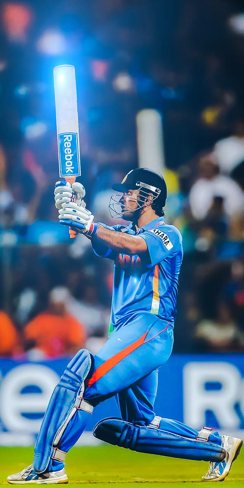 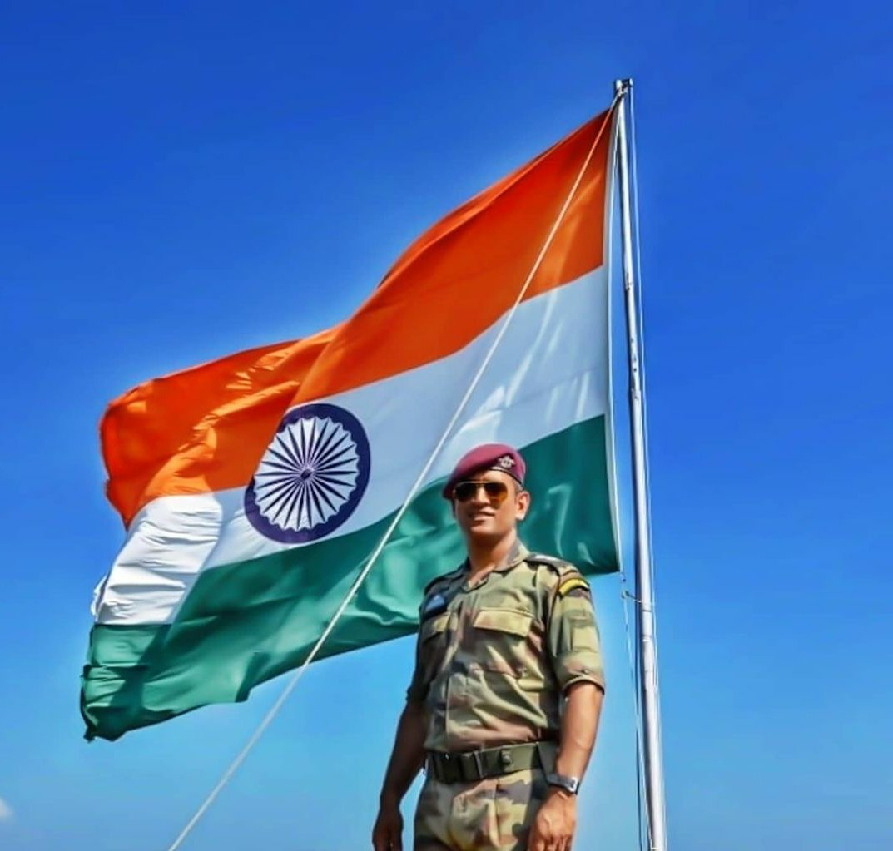
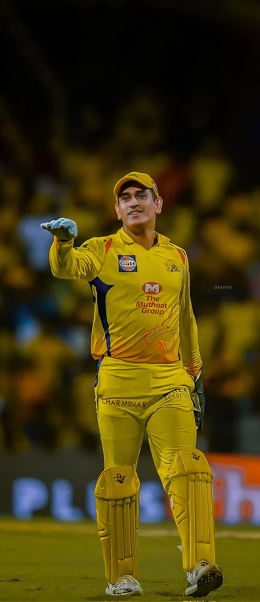
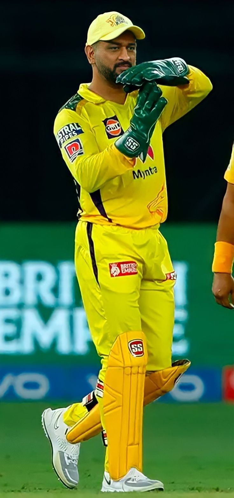
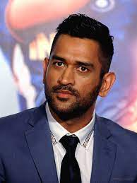
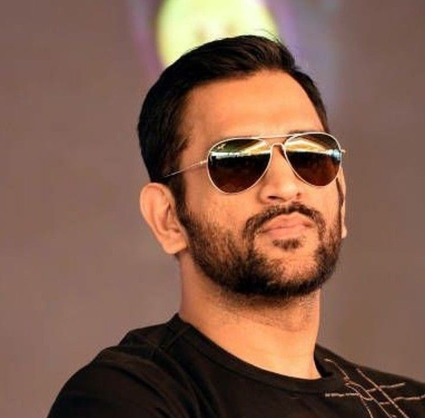
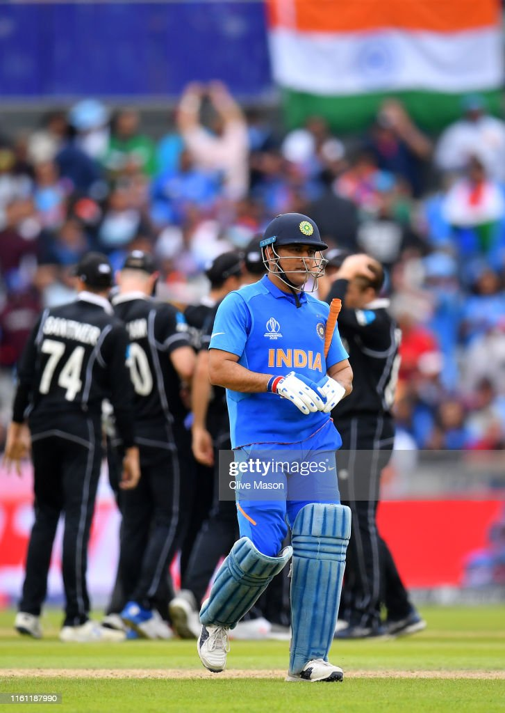
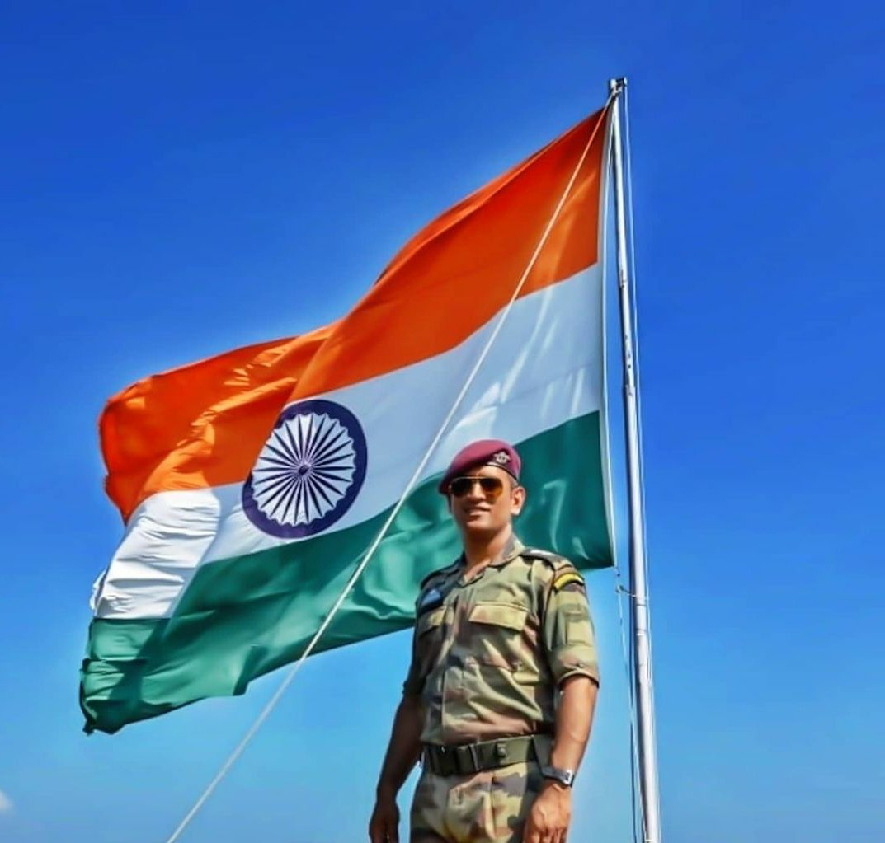
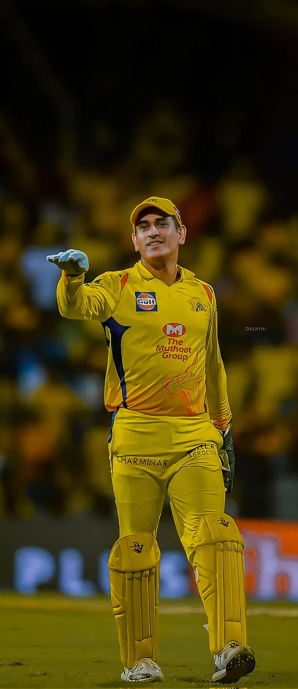
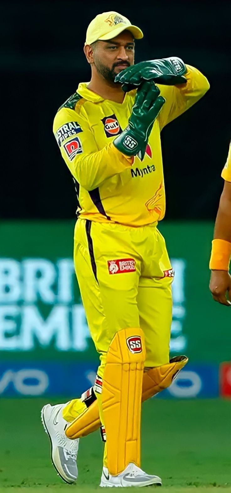
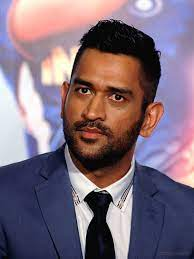
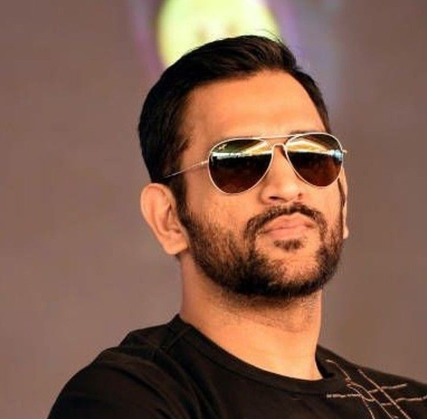
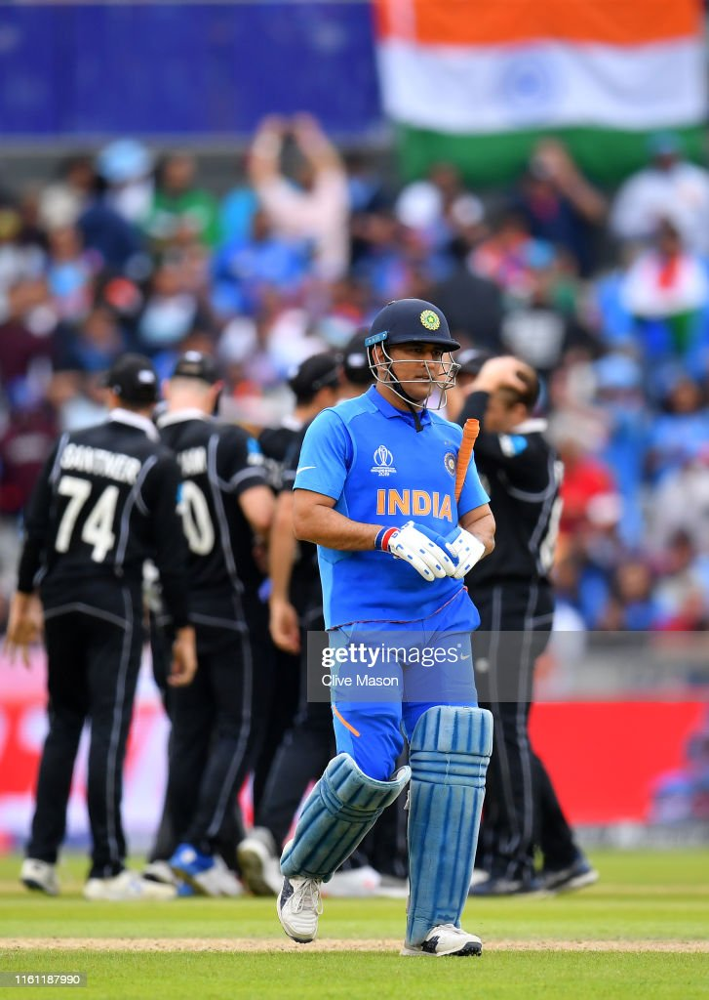
Inspirational quotes of Mahi:
The process is more important than the results.
Till the full stop does not come; the sentence does not complete.
It's important to learn and not make the same mistakes, what's done is done.
I want people to remember me as a Good Person, Not as a Good Cricketer.
I live for the moment - not the future, not the past.